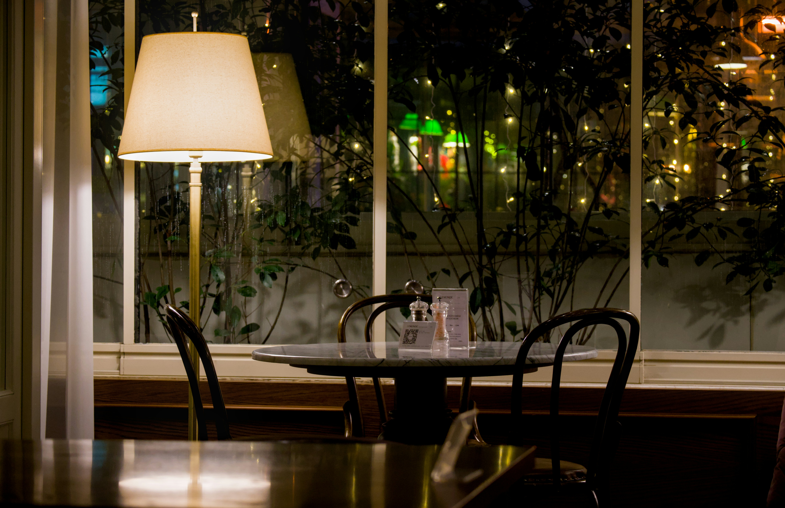
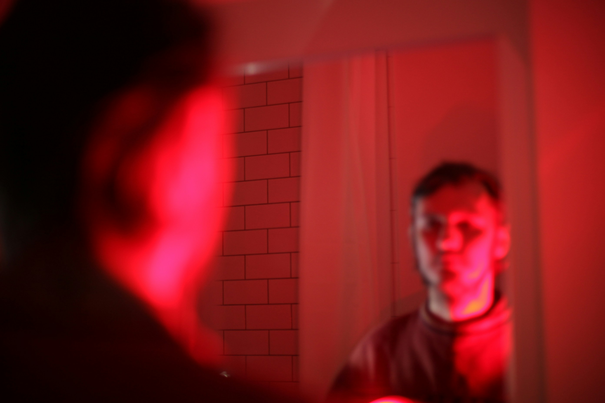
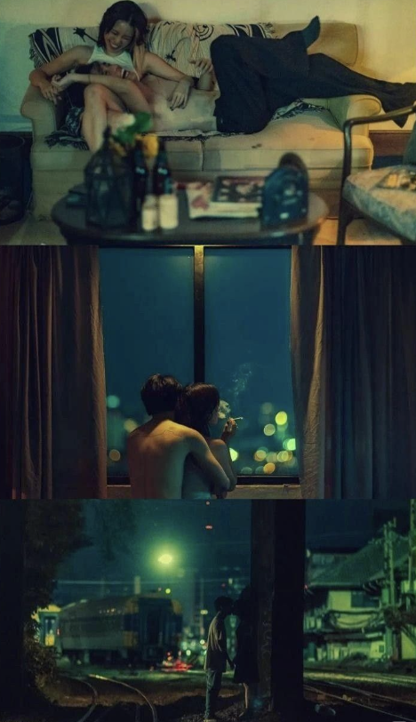
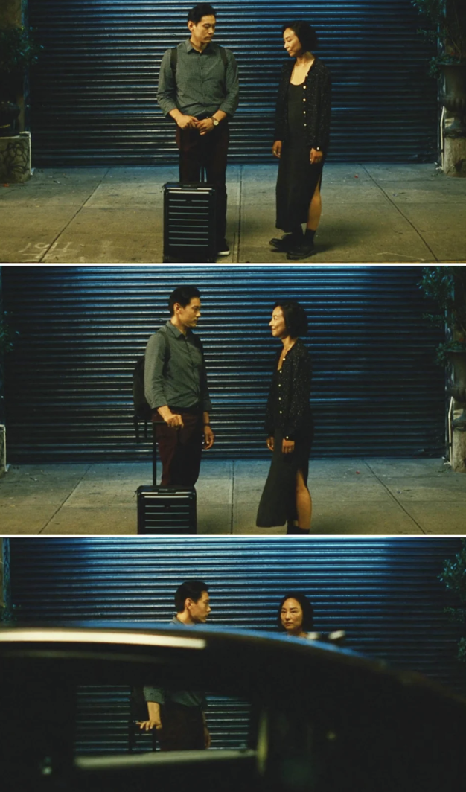

a sunset III film
"some goodbyes don't exist.
so you build them."
"I just wish you'd let me say goodbye."
— Milo
The Film
A man. A restaurant. A night that was supposed to be a fresh start.
in another life, TONIGHT is a psychological drama about the quiet, costly work of survival — and what it takes to close a door that was never properly opened.
15 minutes. One night. Two timelines.


The Characters
Late 20s · Our entire lens
Milo
the one who waited
Who he is
Thorough and intentional. Plans the perfect evening and quietly watches to see if it lands. Checked Lex's Instagram before bringing him here.
His wound
He let himself be fully seen and got silence back. He waited for Lex to validate what happened. Lex never did.
His arc
Stops waiting for something that was never coming. Builds it himself. Discovers that building it and receiving it are not the same thing.
Late 30s · Presence and absence
Lex
the one who stayed quiet
Who he is
Guarded in a way that looks like charm. Capable of openness in small doses — a joke, a moment, a quiet admission. But always with the door slightly ajar behind him.
His wound
Being truly seen felt like a threat, not a gift. He chose silence over the risk of being known. He went quiet when Milo needed him to speak.
His arc
None. The tragedy isn't that Lex changed. It's that he didn't.
Director's Vision
"I was drawn to this script for how quietly it handles an ending that never fully arrives. There's no confrontation or clear resolution — just the weight of something unfinished. That emotional ambiguity feels very real to me, and the many experiences I had dating men that were not healed yet. This purgatory of sorts is the space I want to build the film from rather than trying to define it.
In directing, I plan to let memory, imagination, and the present bleed together, the way they do when something unresolved lingers. Milo doesn't get the goodbye he needed, so he creates one. And while that may offer a kind of release, I'm interested in the quiet loss within that — something real that can never be recreated or truly forgotten.
My approach will be restrained, letting the story live in small looks and unspoken moments. In the end, it's not about resolution, but a resurrection of self — to decide to love again despite the fear that will linger."
— Tony Tacheny, Director


The film is grounded and intimate — feeling like we're watching two real people navigate something undefined. Moody but not dark. Soft, natural light with a sense of quiet atmosphere. The camera stays close and patient, capturing small, unspoken moments. Memory, imagination, and the present aren't visually separated, but gently blur together, creating the feeling of a memory that may not be entirely true. This film will blend the realness of Past Lives and the uncertainty of Aftersun.
Key Creatives
Director
Tony Tacheny
Writer / Exec. Producer / Actor
Mickey Singh
Producer
Nidhin Patel
Production
a sunset III film
Festival Targets
Targeting the 2026 circuit
Sundance·Tribeca·SXSW·Outfest
Screenings, festival dates & updates.
You'll hear from us. ✦